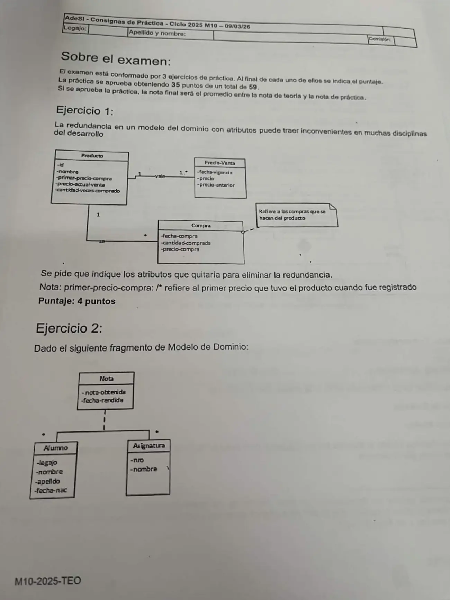
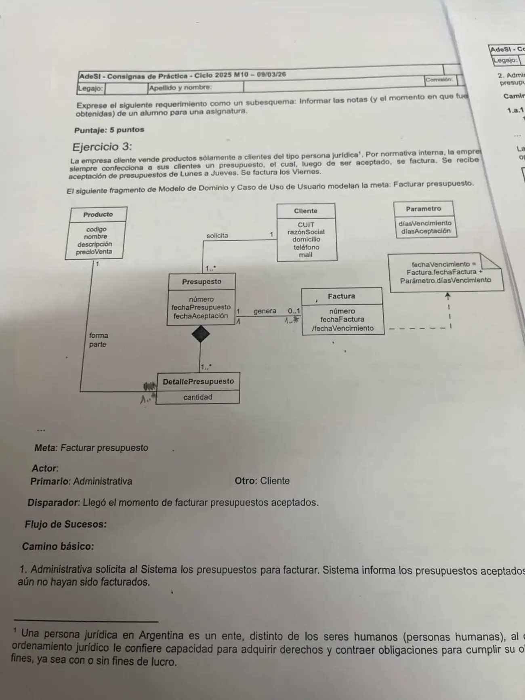
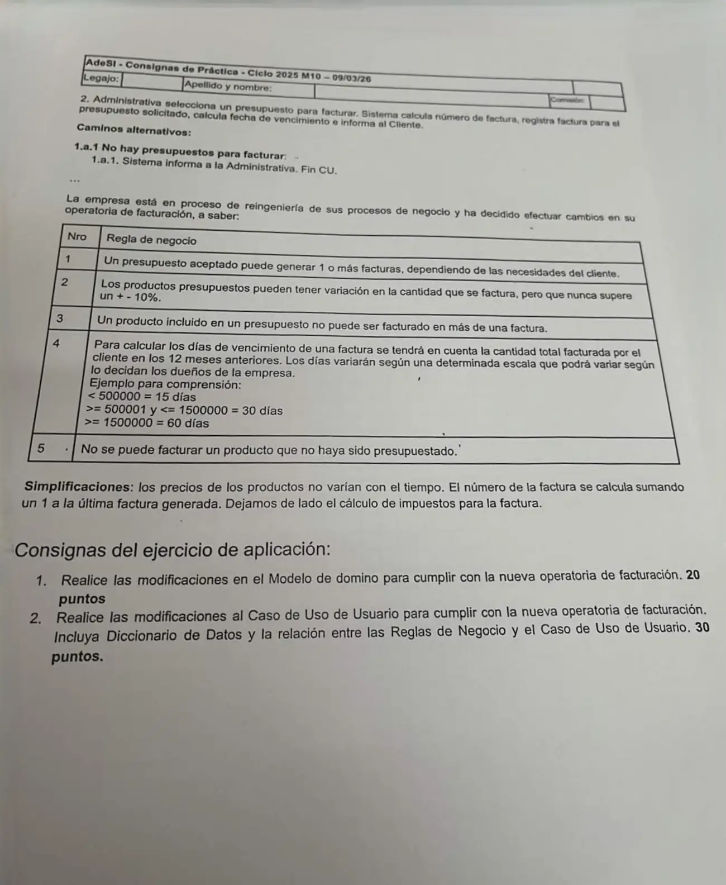

Final, 09/03/2026
Final, 09/03/2026
Enunciado






Propuesta de respuesta
Respuesta no verificada. La propuso Luta Studios con inteligencia artificial y ningún docente la revisó. Puede tener errores.
Ejercicio 1. Redundancia
Se quitan los atributos que se pueden obtener de otras clases del mismo modelo.
| Atributo que se quita | De dónde sale |
|---|---|
Producto.precio-actual-venta | El precio del Precio-Venta con la fecha-vigencia más reciente que no pasa de hoy |
Producto.cantidad-veces-comprado | La cantidad de Compras del producto |
Producto.primer-precio-compra | El precio-compra de la Compra con la fecha-compra más antigua |
Precio-Venta.precio-anterior | El precio del Precio-Venta anterior en fecha-vigencia |
Se quedan id, nombre, fecha-vigencia, precio y los tres de Compra.
Ejercicio 2. Subesquema
FE solicitudNotas = legajo + nroAsignatura
FS notasAlumno = [legajo + apellido + nombre + nombreAsignatura + 1{notaObtenida + fechaRendida}n | msgSinNotas]Con Nota como clase asociativa sin {Bag}, el modelo guarda una sola nota por alumno y asignatura. Si el requerimiento pide varias, como dice «las notas», la asociativa necesita {Bag}. El subesquema deja esa falta a la vista.
Ejercicio 3.1. Cambios en el modelo del dominio
| Regla | Cambio |
|---|---|
| 1 | Presupuesto–Factura pasa de 0..1 a 0..* |
| 3 y 5 | Nueva clase DetalleFactura, compuesta en Factura, asociada a un solo DetallePresupuesto (1) y cada DetallePresupuesto a ninguno o un DetalleFactura (0..1) |
| 2 | cantidadFacturada en DetalleFactura, que puede diferir de cantidad |
| 4 | diasVencimiento sale de Parametro y nace EscalaVencimiento, que los dueños pueden cambiar. fechaVencimiento deja de ser derivado y se guarda al facturar, para que un cambio de escala no mueva las facturas viejas. /total y /subtotal permiten sumar lo facturado al cliente |
Tocá el dibujo para verlo en pantalla completa.
Ejercicio 3.2. Caso de uso de usuario modificado
CUU01 Facturar presupuesto
| Campo | Contenido |
|---|---|
| Dimensiones | Usuario, Sin estructurar, Sistema, Negra, Real, Semántica |
| Meta | Facturar presupuesto |
| Actor primario | Administrativa |
| Otros | Cliente |
| Precondiciones de negocio | <vacío> |
| Precondiciones de sistema | Existen Presupuestos aceptados. Existen Productos. Existen EscalasVencimiento. |
| Disparador | Llegó el momento de facturar presupuestos aceptados. |
Camino básico
- Administrativa solicita al Sistema los presupuestos para facturar. Sistema informa los presupuestos aceptados que tienen productos sin facturar.
- Administrativa selecciona un presupuesto para facturar. Sistema informa los productos del presupuesto que aún no fueron facturados, con su cantidad.
- Administrativa ingresa los productos a facturar y la cantidad de cada uno. Sistema valida las cantidades, calcula número de factura, total, días de vencimiento según lo facturado al cliente en los 12 meses anteriores y fecha de vencimiento, registra la factura e informa al Cliente.
Caminos alternativos
1.a <reemplaza>No hay presupuestos para facturar:1.a.1Sistema informa a la Administrativa. Fin CU.
3.a <durante>La cantidad a facturar de un producto varía más de un 10 % de la presupuestada:3.a.1Sistema informa la situación. Continúa en paso 3.
*.aAdministrativa decide no facturar. Fin CU.
Postcondiciones de sistema
- Éxito: Una nueva Factura con sus DetalleFactura está registrada.
- Fracaso:
<vacío> - Éxito alternativo:
<vacío>
Postcondiciones de negocio
- Éxito: El presupuesto, o parte de él, está facturado.
- Fracaso: No hay presupuestos para facturar (1.a).
- Éxito alternativo:
<vacío>
Reglas de negocio relacionadas con el caso de uso, con el paso y el tipo
11. Un presupuesto aceptado puede generar 1 o más facturas (hecho)2 y 33. Un producto de un presupuesto no puede facturarse en más de una factura (restricción)32. La cantidad facturada no puede variar más de un 10 % de la presupuestada (restricción)34. Los días de vencimiento salen de la escala según lo facturado al cliente en los 12 meses anteriores (cálculo)35. No se puede facturar un producto que no fue presupuestado (restricción)3El número de factura es el de la última factura más 1 (cálculo)
Diccionario de datos
Paso E/S Flujo
1 S presupuestosAFacturar = 1{numero + fechaPresupuesto + fechaAceptacion + CUIT + razonSocial}n
2 E presupuestoElegido = numero
2 S pendientes = numero + CUIT + razonSocial + 1{codigo + nombre + precioVenta + cantidad}n
3 E aFacturar = numero + 1{codigo + cantidadFacturada}n
3 S factura = numeroFactura + fechaFactura + fechaVencimiento + CUIT + razonSocial + domicilio + 1{codigo + nombre + cantidadFacturada + precioVenta + subtotal}n + total
1.a.1 S noHayPresupuestos = mensaje(d) mensaje(d) = "No hay presupuestos para facturar"
3.a.1 S fueraDeRango = codigo + cantidad + cantidadFacturada + mensaje(d)Respuesta no verificada. Puede tener errores.
Se armó con la página del 2° parcial (modelo del dominio, atributo derivado, clase asociativa, subesquema, casos de uso, reglas de negocio y diccionario de datos). La forma del caso de uso sigue el CUU01 de la resolución del 2° parcial del 01/11/25 y el subesquema, el del recuperatorio del 19/02/24.
Quedó en duda: En el ejercicio 1, si un producto se registra antes de su primera compra, primer-precio-compra no sale de Compra y habría que dejarlo. En el ejercicio 2 no queda claro si la cátedra espera marcar la falta de {Bag}. En el 3, guardar fechaVencimiento en vez de dejarla derivada es una decisión para que el cambio de escala no afecte facturas viejas. El ±10 % podría ir como atributo de Parametro si se quiere poder cambiarlo. La notación del diccionario sale de un resumen de alumno.
¿Cómo te fue?
Marcá cada tema del examen.
- Modelo del dominioModelo del dominio, en 2° parcial
- SubesquemaSubesquema de navegación, en 2° parcial
- Caso de usoCasos de uso, en 2° parcial
- Diccionario de datosDiccionario de datos, en 2° parcial
- Reglas de negocioReglas de negocio, en 2° parcial